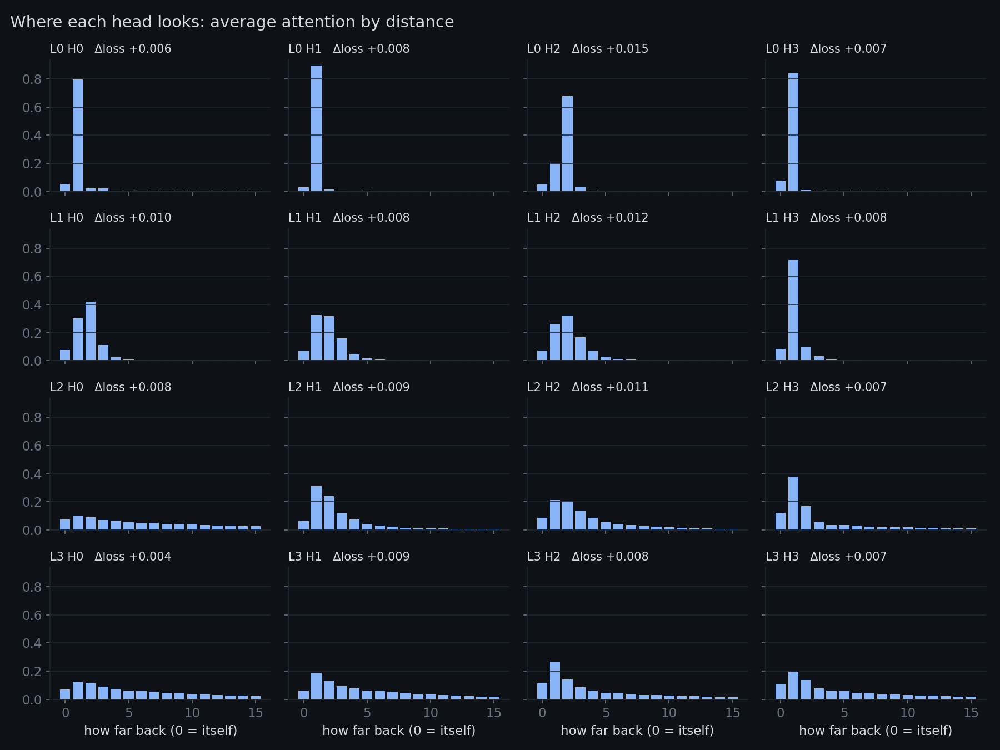
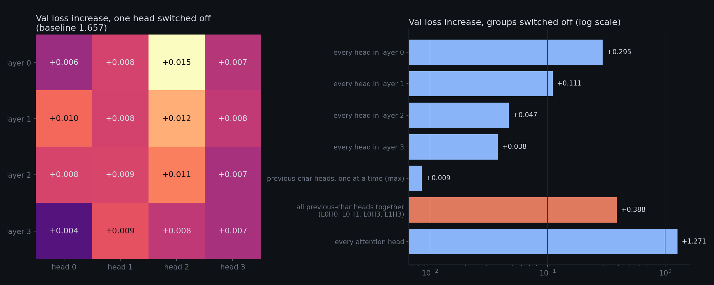
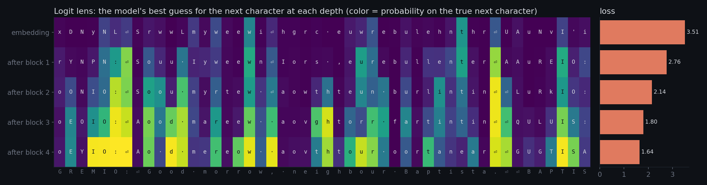
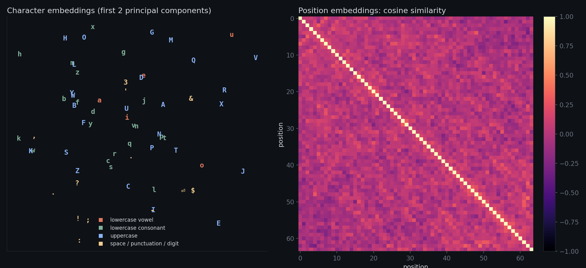
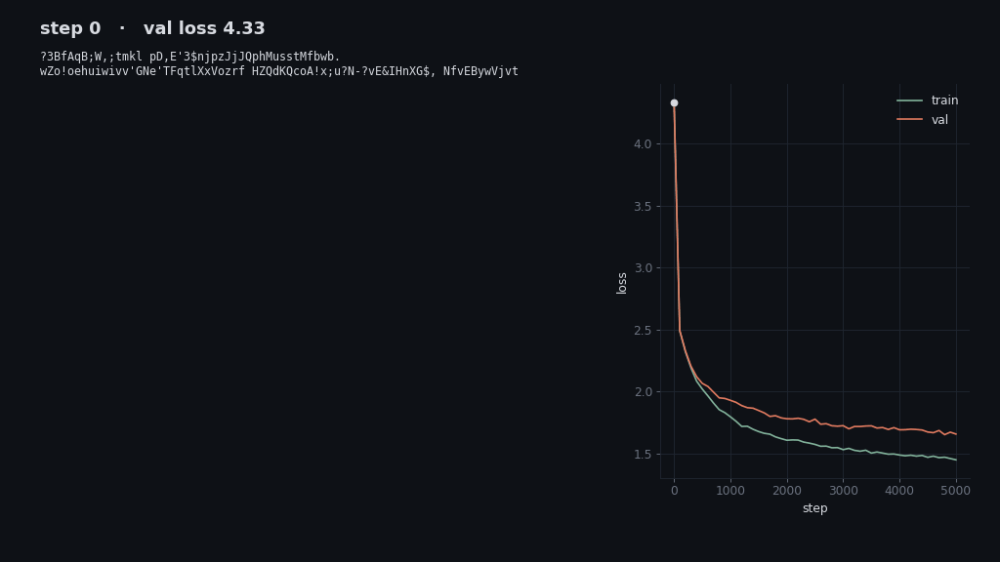

A 0.8M-parameter character-level GPT trained on Shakespeare, opened up. Pick a character and see which earlier characters each attention head reads from when predicting what comes next.
passage
layer
head
Hover or tap a character. Shading = how much the selected head, at that position, attends to each earlier character. Later characters are greyed out because the causal mask hides them.
After , the model predicts
Selected head
All 16 heads on this passage
Each square is one head's full attention matrix: row = the character doing the looking, column = the character looked at. Everything above the diagonal is the future, so it's empty. The line marks the selected character. Δ is how much validation loss rises when that head is switched off.
What the heads do

Average attention by distance. Layer 0 is almost all lookup: three heads read the previous character (80–89% of their attention) and one, L0H2, reads exactly two characters back. Layer 1 reads a window of 1–4 characters. Layers 2 and 3 spread out over the whole context, which is where word- and line-level information can come from.

Switching off any single head barely matters (+0.004 to +0.015). The previous-character heads cover for each other: knock out one and loss rises by at most 0.009, knock out all four together and it rises by 0.388. Early layers matter most: removing layer 0's attention costs 0.295, layer 3's only 0.038.

Logit lens: decode the residual stream after each block with the final LayerNorm and output layer. Loss falls 3.51 → 2.76 → 2.14 → 1.80 → 1.64 with depth. By the last block the model knows a name in capitals ends in a colon and a newline, and that a capital follows the newline.

Left: the 65 character embeddings projected to 2-D. The structure is weak at this size; punctuation drifts to one corner, but vowels and consonants don't separate cleanly. Right: position embeddings are close to orthogonal to each other. With only 64 positions and 128 dimensions, the model gave each position its own direction instead of learning a smooth code.

Samples from the same random seed as training goes on.